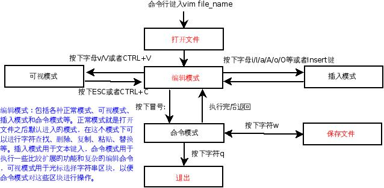

程序開發過程中，源代碼的編輯主要是為了實現算法，結果則是一些可閱讀的、便於檢錯的、可移植的文本文件。如何產生一份良好的源代碼，這不僅需要一些良好的編輯工具，還需要開發人員養成良好的編程修養。
Linux 下有很多優秀的程序編輯工具，包括專業的文本編輯器和一些集成開發環境（IDE）提供的編輯工具，前者的代表作有 Vim 和 Emacs，後者的代表作則有 Eclipse，Kdevelope，Anjuta 等，這裡主要介紹 Vim 的基本使用和配置。
通過 Vim 進行文本編輯的一般過程包括：文件的打開、編輯、保存、關閉/退出，而編輯則包括插入新內容、替換已有內容、查找內容，還包括複製、粘貼、刪除等基本操作。
該過程如下圖：

下面介紹幾個主要操作：
在命令行下輸入 vim 文件名 即可打開一個新文件並進入 Vim 的“編輯模式”。
編輯模式可以切換到命令模式（按下字符 :）和插入模式（按下字母 a/A/i/I/o/O/s/S/c/C 等或者 Insert 鍵）。
編輯模式下，Vim 會把鍵盤輸入解釋成 Vim 的編輯命令，以便實現諸如字符串查找(按下字母 /)、文本複製（按下字母 yy）、粘貼（按下字母 pp）、刪除（按下字母 d 等）、替換（s）等各種操作。
當按下 a/A/i/I/o/O/s/S/c/C 等字符時，Vim 先執行這些字符對應命令的動作（比如移動光標到某個位置，刪除某些字符），然後進入插入模式；進入插入模式後可以通過按下 ESC 鍵或者是 CTRL+C 返回到編輯模式。
在編輯模式下輸入冒號 : 後可進入命令模式，通過它可以完成一些複雜的編輯功能，比如進行正則表達式匹配替換，執行 Shell 命令（按下 ! 命令）等。
實際上，無論是插入模式還是命令模式都是編輯模式的一種。而編輯模式卻並不止它們兩個，還有字符串查找、刪除、替換等。
需要提到的是，如果在編輯模式按下字母 v/V 或者是 CTRL+V，可以用光標選擇一個區塊，進而結合命令模式對這一個區塊進行特定的操作。
打開文件以後即可進入編輯模式，這時可以進行各種編輯操作，包括插入、複製、刪除、替換字符。其中兩種比較重要的模式經常被“獨立”出來，即上面提到的插入模式和命令模式。
在退出之前需切換到命令模式，輸入命令 w 以便保存各種編輯後的內容，如果想取消某種操作，可以用 u 命令。如果打開 Vim 編輯器時沒有設定文件名，那麼在按下 w 命令時會提示沒有文件名，此時需要在 w 命令後加上需要保存的文件名。
保存好內容後就可退出，只需在命令模式下鍵入字符 q。如果對文件內容進行了編輯，卻沒有保存，那麼 Vim 會提示，如果不想保存之前的編輯動作，那麼可按下字符 q 並且在之後跟上一個感嘆號!，這樣會強制退出，不保存最近的內容變更。
這裡需要著重提到的是 Vim 的命令模式，它是 Vim 擴展各種新功能的接口，用戶可以通過它啟用和撤銷某個功能，開發人員則可通過它為用戶提供新的功能。下面主要介紹通過命令模式這個接口定製 Vim 以便我們更好地進行源代碼的編輯。
先提一下編碼風格。剛學習編程時，代碼寫得很“難看”（不方便閱讀，不方便檢錯，看不出任何邏輯結構），常常導致心情不好，而且排錯也很困難，所以逐漸意識到代碼編寫需要規範，即養成良好的編碼風格，如果換成俗話，那就是代碼的排版，讓代碼好看一些。雖說“編程的“（高雅一些則稱開發人員）不一定懂藝術，不過這個應該不是“搞藝術的”（高雅一些應該是文藝工作人員）的特權，而是我們應該具備的專業素養。在 Linux 下，比較流行的“行業”風格有 KR 的編碼風格、GNU 的編碼風格、Linux 內核的編碼風格（基於 KR 的，縮進是 8 個空格）等，它們都可以通過 indent 命令格式化，對應的選項分別是-kr，-gnu，-kr -i8。下面演示用 indent 命令把代碼格式化成上面的三種風格。
這樣糟糕的編碼風格看著會讓人想“哭”，太難閱讀啦：
$ cat > test.c
/* test.c -- a test program for using indent */
#include<stdio.h>
int main(int argc, char *argv[])
{
int i=0;
if (i != 0) {i++; }
else {i--; };
for(i=0;i<5;i++)j++;
printf("i=%d,j=%d\n",i,j);
return 0;
}
格式化成 KR 風格，好看多了：
$ indent -kr test.c
$ cat test.c
/* test.c -- a test program for using indent */
#include<stdio.h>
int main(int argc, char *argv[])
{
int i = 0;
if (i != 0) {
i++;
} else {
i--;
};
for (i = 0; i < 5; i++)
j++;
printf("i=%d,j=%d\n", i, j);
return 0;
}
採用 GNU 風格，感覺不如 KR 的風格，處理 if 語句時增加了代碼行，卻並沒明顯改進效果：
$ indent -gnu test.c
$ cat test.c
/* test.c -- a test program for using indent */
#include<stdio.h>
int
main (int argc, char *argv[])
{
int i = 0;
if (i != 0)
{
i++;
}
else
{
i--;
};
for (i = 0; i < 5; i++)
j++;
printf ("i=%d,j=%d\n", i, j);
return 0;
}
實際上 indent 命令有時候會不靠譜，也不建議“先汙染再治理”，而是從一開始就堅持“可持續發展”的觀念，在寫代碼時就逐步養成良好的風格。
需要提到地是，Linux 的編碼風格描述文件為內核源碼下的 Documentation/CodingStyle，而相應命令為 scripts/Lindent。
從演示中可看出編碼風格真地很重要，但是如何養成良好的編碼風格呢？經常練習，遵守某個編碼風格，一如既往。不過這還不夠，如果沒有一個好編輯器，習慣也很難養成。而 Vim 提供了很多輔助我們養成良好編碼習慣的功能，這些都通過它的命令模式提供。現在分開介紹幾個功能；
| Vim 命令 | 功效 |
|---|---|
:syntax on |
語法加“靚”（亮） |
:syntax off |
語法不加“靚”（亮） |
:set cindent |
C 語言自動縮進（可簡寫為set cin） |
:set sw=8 |
自動縮進寬度（需要set cin才有用） |
:set ts=8 |
設定 TAB 寬度 |
:set number |
顯示行號 |
:set nonumber |
不顯示行號 |
:setsm |
括號自動匹配 |
這幾個命令對代碼編寫來說非常有用，可以考慮把它們全部寫到 ~/.vimrc 文件（Vim 啟動時會去加載這個文件裡頭的內容）中，如：
$ cat ~/.vimrc
:set number
:set sw=8
:set ts=8
:set sm
:set cin
:syntax on
需要補充的幾個技巧有；
gqap 命令對註釋自動斷行（每行字符個數可通過命令模式下的 set textwidth=個數 設定）vim +數字 文件名實現相同的功能。TOhtml命令可把 C 語言輸出為 html 文件，結合 syntax on，可產生比較好的網頁把代碼發佈出去。v 可切換過來），用光標選中一片代碼，然後通過命令模式下的命令 s#^#//#g 把某這片代碼註釋掉，這非常方便調試某一片代碼的功能。set paste 可解決複製本來已有縮進的代碼的自動縮進問題，後可執行 set nopaste 恢復自動縮進。set nocp 取消與老版本的 Vi 的兼容。%s#old_variable#new_variable#g 全局替換。替換的時注意變量名是其他變量一部分的情況。expandtab，即 set et，如果要把以前編寫的代碼中的縮進和 TAB 鍵都替換掉，可以用 retab。CTRL+P 即可。比如先輸入 prin，然後按下 CTRL+P 就可以補全了。Shift+k 就可以調出 man，很有用。g/^$/d，前面 g 命令是擴展到全局，中間是匹配空行，後面 d 命令是執行刪除動作。用替換也可以實現，鍵入 %s#^\n##g，意思是把所有以換行開頭的行全部替換為空。類似地，如果要把多個空行轉換為一個可以輸入 g/^\n$/d 或者 %s#^\n$##g。ctags, cscope 等，可以提高代碼閱讀、分析的效率。特別是開放的軟件。ctags 或 cscope 時，當找到某個標記後，又想回到原位置，可按下 CTRL+T。這裡特別提到 cscope，為了加速代碼的閱讀，還可以類似上面在 ~/.vimrc 文件中通過 map 命令預定義一些快捷方式，例如：
if has("cscope")
set csprg=/usr/bin/cscope
set csto=0
set cst
set nocsverb
" add any database in current directory
if filereadable("cscope.out")
cs add cscope.out
" else add database pointed to by environment
elseif $CSCOPE_DB != ""
cs add $CSCOPE_DB
endif
set csverb
:map \ :cs find g <C-R>=expand("<cword>")<CR><CR>
:map s :cs find s <C-R>=expand("<cword>")<CR><CR>
:map t :cs find t <C-R>=expand("<cword>")<CR><CR>
:map c :cs find c <C-R>=expand("<cword>")<CR><CR>
:map C :cs find d <C-R>=expand("<cword>")<CR><CR>
:map f :cs find f <C-R>=expand("<cword>")<CR><CR>
endif
因為 s,t,c,C,f 這幾個 Vim 的默認快捷鍵用得不太多，所以就把它們給作為快捷方式映射了，如果已經習慣它們作為其他的快捷方式就換別的字符吧。
注 上面很多技巧中用到了正則表達式，關於這部分請參考：正則表達式 30 分鐘入門教程。
更多的技巧可以看看後續資料。
實際上，在源代碼編寫時還有很多需要培養的“素質”，例如源文件的開頭註釋、函數的註釋，變量的命名等。這方面建議看看參考資料裡的編程修養、內核編碼風格、網絡上流傳的《華為編程規範》，以及《C Traps & Pitfalls》, 《C-FAQ》等。